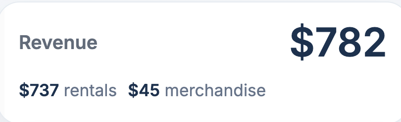
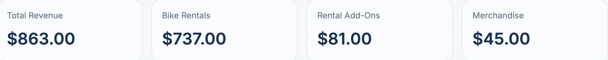
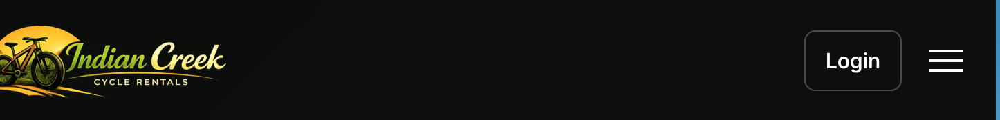

QA · Manual Testing · Defect Documentation
Revisiting the Indian Creek Cycle Rentals capstone from a tester's perspective: structured test cases, exploratory sessions, documented defects, and regression tracking on the admin features.
The Problem
Indian Creek Cycle Rentals was originally built as a team capstone project, where the focus was shipping features. This project revisits the finished application from a tester's perspective: writing structured test cases, exploring the admin features the way a real user or administrator would, and documenting what actually breaks rather than what was assumed to work.
The scope now covers both the public-facing site and the custom admin functionality: homepage, navigation, bicycle listings and details, the reservation workflow, authentication, responsive design, accessibility, and error handling, alongside the dashboard, bike management, reservation management, accessories, reviews, and role-based permissions. That broader scope is what surfaced two accessibility defects that pure admin testing would have missed.
Approach
Manual functional, negative, responsive, accessibility, and visual testing, plus exploratory testing, across Google Chrome and Safari, on macOS and Windows 11, desktop and mobile, with regression testing staged and ready once fixes land.
01
Defined scope, approach, environment, and success criteria before writing a single test case, so testing stayed focused on the admin features rather than re-testing the whole capstone app.
02
19 structured manual test cases spanning smoke, functional, negative, responsive, accessibility, visual, and regression testing (17 passed, 2 failed), each with steps, expected results, priority, and status.
03
A free-form session across navigation, the reservation workflow, and the admin dashboard surfaced the first four defects; targeted accessibility testing at higher browser zoom and keyboard-only navigation found two more.
Bug Reports
Each defect includes severity, steps to reproduce, expected vs. actual results, impact, and a suggested fix: the same structure a development team would need to triage and act on it. All six have since been fixed and passed regression testing.
The dashboard reports 19 reservations as "active right now," but the count includes reservations whose end dates have already passed.
Reservations stay in Pending status indefinitely after their period ends. There's no expiration policy to move them to a final status.
Customers aren't told how long a reservation stays pending or when an unpaid reservation gets auto-cancelled.
The dashboard revenue card shows $782.00; the Revenue Breakdown page, on the same data, totals $863.00. The dashboard silently excludes rental add-on revenue.
The site holds up through 150% browser zoom, but at 175% the nav bar disappears, the hamburger menu stops responding, and the logo no longer links home.
Tab/Shift+Tab/Enter work fine within a section, but moving from the header navigation into page content requires a mouse click before keyboard navigation resumes.
This was the highest-severity find: two pages reporting two different totals from the same underlying data, which is exactly the kind of bug that erodes trust in a dashboard. The Revenue Breakdown page correctly sums Bike Rentals ($737), Rental Add-Ons ($81), and Merchandise ($45) to $863, but the dashboard's revenue card leaves rental add-ons out of its total entirely.


Found while testing accessibility at increased browser zoom, a real scenario for low-vision users. Navigation degrades gracefully up to 150% zoom, but crosses a breaking point at 175%: the nav bar disappears entirely, the hamburger menu stops opening, and clicking the logo no longer returns users to the homepage.

Documented as a screen recording rather than a screenshot, since the bug is about motion: where keyboard focus goes (or doesn't) as you tab from the header into the page.
Bug Fixes
Each defect was handed off with a suggested fix, then closed out with a real code change and a regression pass to confirm it. Here's the BUG-004 fix, the dashboard revenue mismatch, straight from the commit diff:
+ rental_addon_revenue = Decimal("0.00")
+ # BUG-004: rental add-ons are revenue too, so include them in the dashboard total.
+ for item in ReservationAccessory.objects.filter(
+ fulfillment_type="rental",
+ reservation__status__in=["paid", "active", "completed"],
+ ):
+ rental_addon_revenue += item.get_total()One line explaining why the fix exists, right next to the code that makes it, is a small habit that makes a defect easy to verify later. All six fixes follow this same pattern.
Regression Testing
Each defect was mapped to the test case that would confirm it was actually resolved: TC-002 for BUG-001, TC-007 for BUG-002, TC-010 for BUG-003, TC-019 for BUG-004, TC-020 for BUG-005, and TC-021 for BUG-006. Regression Cycle 1 has been completed: all 21 test cases pass, all six defects are closed and verified, and no new issues were introduced by the fixes.
Project Files
| File | Description |
|---|---|
| README.md | Project overview, scope, and testing types |
| test-plan/test-plan.md | Scope, approach, environment, and success criteria |
| test-cases/Manual-Test-Cases.xlsx | 19 structured manual test cases |
| bug-reports/BUG-001 through BUG-006 | Individual defect reports with repro steps and severity |
| bug-reports/Bug-Log.xlsx | Defect tracker: status, severity, and fix verification |
| bug-fixes/Developer-Fix-Summary.md | What changed for each fix, and where |
| bug-fixes/Bug-Fix-Code-Comparison.md | Before/after code diffs for all six fixes |
| evidence/ | Screenshots and a screen recording supporting each bug and test case |
| exploratory-testing/Session-01.md | Exploratory session charter and findings |
| regression-testing/RegressionTestingResults.md | Regression Cycle 1 results: 21/21 passing, all defects closed |
What I Learned
Testing an application I'd already built required deliberately setting aside what I knew was "supposed" to happen and testing what actually does. The dashboard revenue mismatch is a good example: a bug that's easy to miss when you built the feature, but jumps out the moment you compare two numbers that are supposed to agree. Structuring the bug reports with severity, impact, and a suggested fix, rather than just "this is broken," is the same discipline I want to bring into a QA role: making defects easy for a development team to prioritize and act on, not just easy to find. Expanding testing to the public-facing site also surfaced something functional testing alone wouldn't have: two accessibility defects, at higher browser zoom and with keyboard-only navigation, that only show up when you deliberately test outside the "default" way of using a site. Seeing all six through to a fixed, regression-tested, closed status was the part that made the process feel complete: a bug report only really matters once it's verified fixed, not just filed.